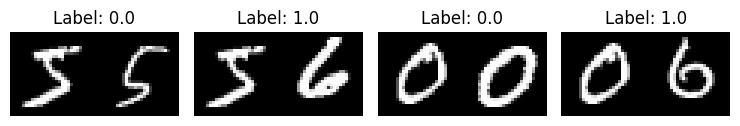
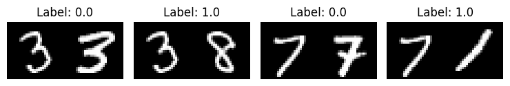
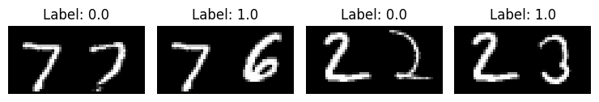

Image similarity estimation using a Siamese Network with a contrastive loss
Author: Mehdi
Date created: 2021/05/06
Last modified: 2026/01/28
Description: Similarity learning using a siamese network trained with a contrastive loss.

Introduction
Siamese Networks are neural networks which share weights between two or more sister networks, each producing embedding vectors of its respective inputs.
In supervised similarity learning, the networks are then trained to maximize the contrast (distance) between embeddings of inputs of different classes, while minimizing the distance between embeddings of similar classes, resulting in embedding spaces that reflect the class segmentation of the training inputs.
Setup
import random
import numpy as np
import keras
from keras import layers
from keras import ops
import matplotlib.pyplot as plt
Hyperparameters
epochs = 10
batch_size = 16
margin = 1 # Margin for contrastive loss.
Load the MNIST dataset
(x_train_val, y_train_val), (x_test, y_test) = keras.datasets.mnist.load_data()
# Change the data type to a floating point format
x_train_val = x_train_val.astype("float32")
x_test = x_test.astype("float32")
Define training and validation sets
# Keep 50% of train_val in validation set
x_train, x_val = x_train_val[:30000], x_train_val[30000:]
y_train, y_val = y_train_val[:30000], y_train_val[30000:]
del x_train_val, y_train_val
Create pairs of images
We will train the model to differentiate between digits of different classes. For
example, digit 0 needs to be differentiated from the rest of the
digits (1 through 9), digit 1 - from 0 and 2 through 9, and so on.
To carry this out, we will select N random images from class A (for example,
for digit 0) and pair them with N random images from another class B
(for example, for digit 1). Then, we can repeat this process for all classes
of digits (until digit 9). Once we have paired digit 0 with other digits,
we can repeat this process for the remaining classes for the rest of the digits
(from 1 until 9).
def make_pairs(x, y):
"""Creates a tuple containing image pairs with corresponding label.
Arguments:
x: List containing images, each index in this list corresponds to one image.
y: List containing labels, each label with datatype of `int`.
Returns:
Tuple containing two numpy arrays as (pairs_of_samples, labels),
where pairs_of_samples' shape is (2len(x), 2,n_features_dims) and
labels are a binary array of shape (2len(x)).
"""
num_classes = max(y) + 1
digit_indices = [np.where(y == i)[0] for i in range(num_classes)]
pairs = []
labels = []
for idx1 in range(len(x)):
# add a matching example
x1 = x[idx1]
label1 = y[idx1]
idx2 = random.choice(digit_indices[label1])
x2 = x[idx2]
pairs += [[x1, x2]]
labels += [0]
# add a non-matching example
label2 = random.randint(0, num_classes - 1)
while label2 == label1:
label2 = random.randint(0, num_classes - 1)
idx2 = random.choice(digit_indices[label2])
x2 = x[idx2]
pairs += [[x1, x2]]
labels += [1]
return np.array(pairs), np.array(labels).astype("float32")
# make train pairs
pairs_train, labels_train = make_pairs(x_train, y_train)
# make validation pairs
pairs_val, labels_val = make_pairs(x_val, y_val)
# make test pairs
pairs_test, labels_test = make_pairs(x_test, y_test)
We get:
pairs_train.shape = (60000, 2, 28, 28)
- We have 60,000 pairs
- Each pair contains 2 images
- Each image has shape
(28, 28)
Split the training pairs
x_train_1 = pairs_train[:, 0] # x_train_1.shape is (60000, 28, 28)
x_train_2 = pairs_train[:, 1]
Split the validation pairs
x_val_1 = pairs_val[:, 0] # x_val_1.shape = (60000, 28, 28)
x_val_2 = pairs_val[:, 1]
Split the test pairs
x_test_1 = pairs_test[:, 0] # x_test_1.shape = (20000, 28, 28)
x_test_2 = pairs_test[:, 1]
Visualize pairs and their labels
def visualize(pairs, labels, to_show=6, num_col=3, predictions=None, test=False):
"""Creates a plot of pairs and labels, and prediction if it's test dataset.
Arguments:
pairs: Numpy Array, of pairs to visualize, having shape
(Number of pairs, 2, 28, 28).
to_show: Int, number of examples to visualize (default is 6)
`to_show` must be an integral multiple of `num_col`.
Otherwise it will be trimmed if it is greater than num_col,
and incremented if if it is less then num_col.
num_col: Int, number of images in one row - (default is 3)
For test and train respectively, it should not exceed 3 and 7.
predictions: Numpy Array of predictions with shape (to_show, 1) -
(default is None)
Must be passed when test=True.
test: Boolean telling whether the dataset being visualized is
train dataset or test dataset - (default False).
Returns:
None.
"""
# Define num_row
# If to_show % num_col != 0
# trim to_show,
# to trim to_show limit num_row to the point where
# to_show % num_col == 0
#
# If to_show//num_col == 0
# then it means num_col is greater then to_show
# increment to_show
# to increment to_show set num_row to 1
num_row = to_show // num_col if to_show // num_col != 0 else 1
# `to_show` must be an integral multiple of `num_col`
# we found num_row and we have num_col
# to increment or decrement to_show
# to make it integral multiple of `num_col`
# simply set it equal to num_row * num_col
to_show = num_row * num_col
# Plot the images
fig, axes = plt.subplots(num_row, num_col, figsize=(5, 5))
for i in range(to_show):
# If the number of rows is 1, the axes array is one-dimensional
if num_row == 1:
ax = axes[i % num_col]
else:
ax = axes[i // num_col, i % num_col]
ax.imshow(ops.concatenate([pairs[i][0], pairs[i][1]], axis=1), cmap="gray")
ax.set_axis_off()
if test:
ax.set_title("True: {} | Pred: {:.5f}".format(labels[i], predictions[i][0]))
else:
ax.set_title("Label: {}".format(labels[i]))
if test:
plt.tight_layout(rect=(0, 0, 1.9, 1.9), w_pad=0.0)
else:
plt.tight_layout(rect=(0, 0, 1.5, 1.5))
plt.show()
Inspect training pairs
visualize(pairs_train[:-1], labels_train[:-1], to_show=4, num_col=4)

Inspect validation pairs
visualize(pairs_val[:-1], labels_val[:-1], to_show=4, num_col=4)

Inspect test pairs
visualize(pairs_test[:-1], labels_test[:-1], to_show=4, num_col=4)

Define the model
There are two input layers, each leading to its own network, which
produces embeddings. A Lambda layer then merges them using an
Euclidean distance and the
merged output is fed to the final network.
# Provided two tensors t1 and t2
# Euclidean distance = sqrt(sum(square(t1-t2)))
def euclidean_distance(vects):
"""Find the Euclidean distance between two vectors.
Arguments:
vects: List containing two tensors of same length.
Returns:
Tensor containing euclidean distance
(as floating point value) between vectors.
"""
x, y = vects
sum_square = ops.sum(ops.square(x - y), axis=1, keepdims=True)
return ops.sqrt(ops.maximum(sum_square, keras.backend.epsilon()))
def create_embedding_network():
"""Creates a convolutional neural network for image embedding.
The network takes a grayscale image as input and outputs a 10-dimensional
latent representation (embedding). It uses a series of Conv2D and
AveragePooling2D layers to extract features, followed by a Dense layer
with tanh activation.
Architecture:
- Input: (28, 28, 1)
- BatchNormalization
- Conv2D (4 filters, 5x5 kernel, tanh)
- AveragePooling2D (2x2)
- Conv2D (16 filters, 5x5 kernel, tanh)
- AveragePooling2D (2x2)
- Flatten
- BatchNormalization
- Dense (10 units, tanh)
Returns:
keras.Model: A Functional API model instance mapping (28, 28, 1) images
to 10D embedding vectors.
"""
inputs = layers.Input((28, 28, 1))
x = layers.BatchNormalization()(inputs)
x = layers.Conv2D(4, (5, 5), activation="tanh")(x)
x = layers.AveragePooling2D(pool_size=(2, 2))(x)
x = layers.Conv2D(16, (5, 5), activation="tanh")(x)
x = layers.AveragePooling2D(pool_size=(2, 2))(x)
x = layers.Flatten()(x)
x = layers.BatchNormalization()(x)
x = layers.Dense(10, activation="tanh")(x)
return keras.Model(inputs, x, name="embedding")
embedding_network = create_embedding_network()
input_1 = layers.Input((28, 28, 1))
input_2 = layers.Input((28, 28, 1))
# As mentioned above, Siamese Network share weights between
# tower networks (sister networks). To allow this, we will use
# same embedding network for both tower networks.
tower_1 = embedding_network(input_1)
tower_2 = embedding_network(input_2)
# Distance is the output, remove the final Dense Sigmoid layer
distance = layers.Lambda(euclidean_distance)([tower_1, tower_2])
siamese = keras.Model(inputs=[input_1, input_2], outputs=distance)
Define the contrastive Loss
def loss(margin=1):
"""Provides 'contrastive_loss' an enclosing scope with variable 'margin'.
Arguments:
margin: Integer, defines the baseline for distance for which pairs
should be classified as dissimilar. - (default is 1).
Returns:
'contrastive_loss' function with data ('margin') attached.
"""
# Contrastive loss = mean( (1-true_value) * square(prediction) +
# true_value * square( max(margin-prediction, 0) ))
def contrastive_loss(y_true, y_pred):
"""Calculates the contrastive loss.
Arguments:
y_true: List of labels, each label is of type float32.
y_pred: List of predictions of same length as of y_true,
each label is of type float32.
Returns:
A tensor containing contrastive loss as floating point value.
"""
square_pred = ops.square(y_pred)
margin_square = ops.square(ops.maximum(margin - (y_pred), 0))
return ops.mean((1 - y_true) * square_pred + (y_true) * margin_square)
return contrastive_loss
Define accuracy metric
def accuracy(y_true, y_pred):
"""Computes the accuracy of the predictions.
Arguments:
y_true: List of labels, each label is of type float32.
y_pred: List of predictions of same length as of y_true,
each label is of type float32.
Returns:
A tensor containing accuracy as floating point value.
"""
y_true = ops.cast(y_true, "float32")
y_true = ops.reshape(y_true, [-1])
y_pred = ops.reshape(y_pred, [-1])
# 0 for similar (<0.5), 1 for dissimilar (>0.5)
preds = ops.cast(y_pred > 0.5, "float32")
return ops.mean(ops.equal(y_true, preds))
Compile the model with the contrastive loss
siamese.compile(loss=loss(margin=margin), optimizer="RMSprop", metrics=[accuracy])
siamese.summary()
Model: "functional"
┏━━━━━━━━━━━━━━━━━━━━━┳━━━━━━━━━━━━━━━━━━━┳━━━━━━━━━━━━┳━━━━━━━━━━━━━━━━━━━┓ ┃ Layer (type) ┃ Output Shape ┃ Param # ┃ Connected to ┃ ┡━━━━━━━━━━━━━━━━━━━━━╇━━━━━━━━━━━━━━━━━━━╇━━━━━━━━━━━━╇━━━━━━━━━━━━━━━━━━━┩ │ input_layer_1 │ (None, 28, 28, 1) │ 0 │ - │ │ (InputLayer) │ │ │ │ ├─────────────────────┼───────────────────┼────────────┼───────────────────┤ │ input_layer_2 │ (None, 28, 28, 1) │ 0 │ - │ │ (InputLayer) │ │ │ │ ├─────────────────────┼───────────────────┼────────────┼───────────────────┤ │ embedding │ (None, 10) │ 5,318 │ input_layer_1[0]… │ │ (Functional) │ │ │ input_layer_2[0]… │ ├─────────────────────┼───────────────────┼────────────┼───────────────────┤ │ lambda (Lambda) │ (None, 1) │ 0 │ embedding[0][0], │ │ │ │ │ embedding[1][0] │ └─────────────────────┴───────────────────┴────────────┴───────────────────┘
Total params: 5,318 (20.77 KB)
Trainable params: 4,804 (18.77 KB)
Non-trainable params: 514 (2.01 KB)
Train the model
history = siamese.fit(
[x_train_1, x_train_2],
labels_train,
validation_data=([x_val_1, x_val_2], labels_val),
batch_size=batch_size,
epochs=epochs,
)
Epoch 1/10
3750/3750 ━━━━━━━━━━━━━━━━━━━━ 8s 2ms/step - accuracy: 0.7299 - loss: 0.2343 - val_accuracy: 0.8378 - val_loss: 0.1243
Epoch 2/10
3750/3750 ━━━━━━━━━━━━━━━━━━━━ 8s 2ms/step - accuracy: 0.8192 - loss: 0.1348 - val_accuracy: 0.8734 - val_loss: 0.1023
Epoch 3/10
3750/3750 ━━━━━━━━━━━━━━━━━━━━ 7s 2ms/step - accuracy: 0.8594 - loss: 0.1134 - val_accuracy: 0.8969 - val_loss: 0.0888
Epoch 4/10
3750/3750 ━━━━━━━━━━━━━━━━━━━━ 8s 2ms/step - accuracy: 0.8843 - loss: 0.1004 - val_accuracy: 0.9243 - val_loss: 0.0751
Epoch 5/10
3750/3750 ━━━━━━━━━━━━━━━━━━━━ 8s 2ms/step - accuracy: 0.9047 - loss: 0.0893 - val_accuracy: 0.9313 - val_loss: 0.0706
Epoch 6/10
3750/3750 ━━━━━━━━━━━━━━━━━━━━ 8s 2ms/step - accuracy: 0.9191 - loss: 0.0814 - val_accuracy: 0.9378 - val_loss: 0.0651
Epoch 7/10
3750/3750 ━━━━━━━━━━━━━━━━━━━━ 8s 2ms/step - accuracy: 0.9284 - loss: 0.0759 - val_accuracy: 0.9465 - val_loss: 0.0604
Epoch 8/10
3750/3750 ━━━━━━━━━━━━━━━━━━━━ 8s 2ms/step - accuracy: 0.9364 - loss: 0.0724 - val_accuracy: 0.9478 - val_loss: 0.0603
Epoch 9/10
3750/3750 ━━━━━━━━━━━━━━━━━━━━ 8s 2ms/step - accuracy: 0.9402 - loss: 0.0700 - val_accuracy: 0.9538 - val_loss: 0.0550
Epoch 10/10
3750/3750 ━━━━━━━━━━━━━━━━━━━━ 8s 2ms/step - accuracy: 0.9423 - loss: 0.0675 - val_accuracy: 0.9554 - val_loss: 0.0536
Visualize results
def plt_metric(history, metric, title, has_valid=True):
"""Plots the given 'metric' from 'history'.
Arguments:
history: history attribute of History object returned from Model.fit.
metric: Metric to plot, a string value present as key in 'history'.
title: A string to be used as title of plot.
has_valid: Boolean, true if valid data was passed to Model.fit else false.
Returns:
None.
"""
plt.plot(history[metric])
if has_valid:
plt.plot(history["val_" + metric])
plt.legend(["train", "validation"], loc="upper left")
plt.title(title)
plt.ylabel(metric)
plt.xlabel("epoch")
plt.show()
# Plot the accuracy
plt_metric(history=history.history, metric="accuracy", title="Model accuracy")
# Plot the contrastive loss
plt_metric(history=history.history, metric="loss", title="Contrastive Loss")


Evaluate the model
results = siamese.evaluate([x_test_1, x_test_2], labels_test)
print("test loss, test acc:", results)
625/625 ━━━━━━━━━━━━━━━━━━━━ 1s 1ms/step - accuracy: 0.9577 - loss: 0.0515
test loss, test acc: [0.05146418511867523, 0.9577000141143799]
Visualize the predictions
predictions = siamese.predict([x_test_1, x_test_2])
visualize(pairs_test, labels_test, to_show=3, predictions=predictions, test=True)
625/625 ━━━━━━━━━━━━━━━━━━━━ 1s 1ms/step